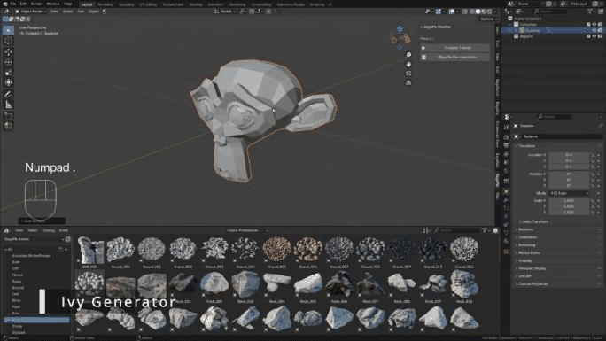

Ivy
The Ivy tool grows procedural ivy on one or more target meshes.
Add ivy
- Place the 3D cursor where the ivy should start (Shift + right click).
- Select the target mesh(es).
- Press J and choose Ivy.

BagaPie creates a sphere empty named Ivy_Parent at the 3D cursor. It is the ivy source: move it to move the ivy. The ivy grows toward the nearest target surface.
Targets
- Add a target: select the new object, then the ivy, and click Add under Target.
- Remove a target: select the object, then the ivy, and click Remove.
More sources
To add another ivy that shares the same targets and settings, place the 3D cursor, select the ivy and click Add Ivy to 3D Cursor. Added parts can be deleted with Delete this part of ivy when their source is selected. The original part can only be removed with the modifier.
Settings
Ivy
| Setting | Effect |
|---|---|
| Spiral / Grid Project | Generation system: a spiral guide projected on the targets, or a projected grid |
| View Guide | Show the guide shape, to understand how the ivy is projected |
| Radius | Size of the guide |
| Height / Loop | Spiral mode only: height and number of loops of the spiral |
| Gravity, Scale, Resolution | Shape and detail of the ivy |
| Density / Decimate | Amount of leaves, and simplification |
Random
Random Position, Emission Area, Surface Offset, Scale and Ivy Random Position add variation to the growth and to the leaves.
Collections
Target, Asset and Emitter are the collections used by the modifier: the target meshes, the leaf assets and the ivy sources. You normally do not need to change them.
Apply and remove
Apply (✓) converts the ivy to a mesh. Remove (−) deletes it.
The ivy is distributed according to the target surface area. If the target is animated or deformed, the ivy can change from frame to frame.